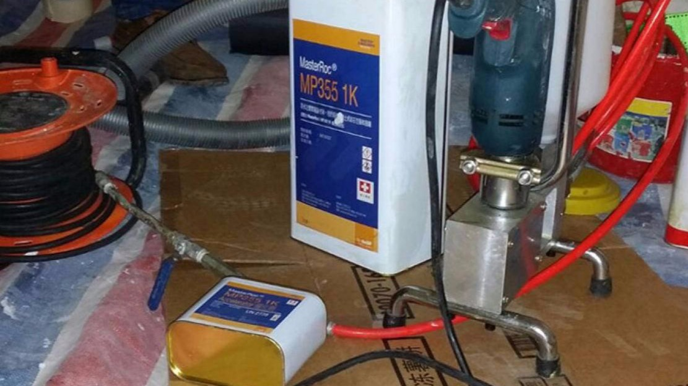
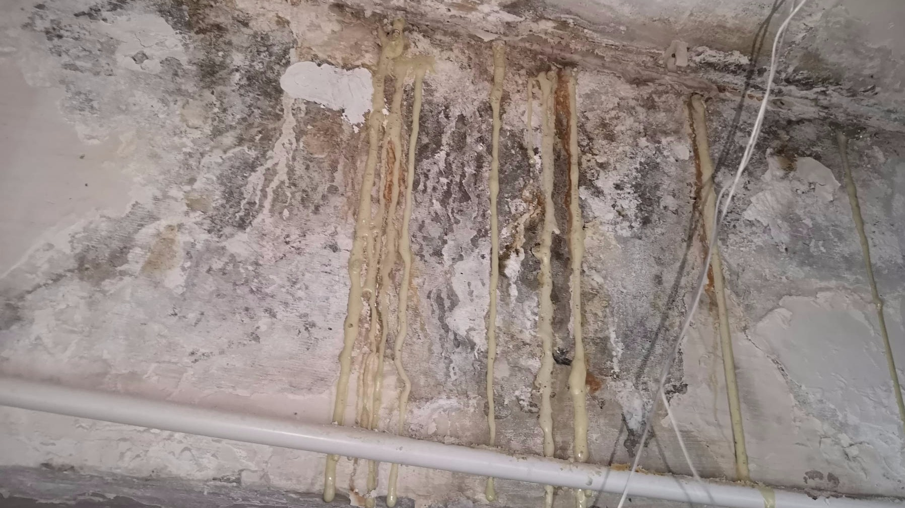
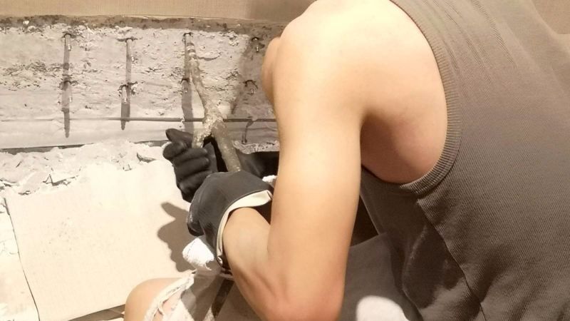
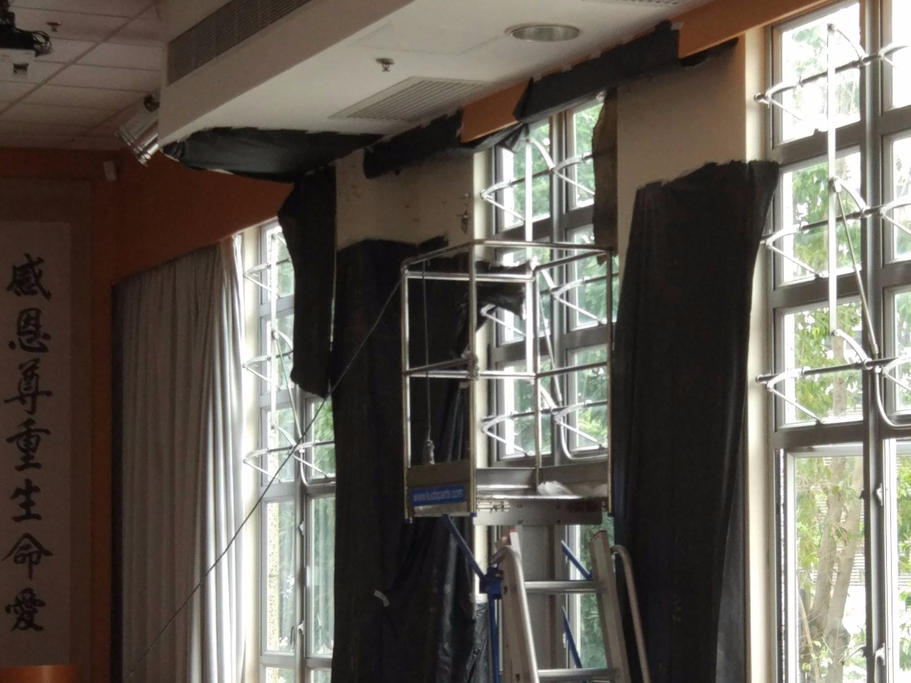

公司簡介
工程概述
天台防水工程
廁所防水工程
外牆防水工程
高壓打針灌漿
施工相片
天台防水工程
廁所防水工程
外牆防水工程
高壓打針灌漿
石屎剝落修葺
專業防水檢測
服務流程
防水資訊
聯絡我們
#
漏水打針
漏水打針工程是通過高壓灌注或注漿，將防水材料深入建築物外牆和結構的裂縫中，以修復和防止水分滲透。防水打針工程能快速且有效地填補裂縫，適用於混凝土和磚牆。
專業的防水打針施工團隊會確保每個裂縫都得到適當的修復，從而達到止水效果。隨著建築技術的不斷進步，防水打針已廣泛應用於各類建築防水工程中。
防水打針合適?不合適?

防水打針工程合適?
漏水打針位置不合適?
防水打針工程步驟

防水打針工程步驟
漏水打針工程7個注意事項

漏水打針工程7個注意事項
防水打針合適?不合適?
防水打針工程是否合適，需要考慮使用環境的特殊性及針對防水性能的實際需求。
合適應用情況
住宅窗框滲漏水：當窗框出現漏水問題時，防水打針可以修復裂縫，防止水分滲入室內。
牆面裂縫滲漏水：如果牆面出現裂縫並導致滲漏，防水打針可以注入防水材料，有效止漏。
施工造成裂縫滲漏水：有時施工過程中可能造成牆體裂縫，防水打針可以修復這些裂縫，防止水分滲入。
不合適/效率不高的應用情況
大面積防水需求：對於大面積需要防水的場所，如天台或大型水池，可能效率不高，建議使用其他更適合的防水方法。
裂縫過大或過深：對於過大或過深的裂縫，防水打針可能無法完全填補，需先進行其他方式的補強。
長期積水的地方：防水針對於廁所、天台和水缸等長期積水的地方，其防水效果有限。長期積水區域可能需要專業的防水材料進行修復和防水處理。
防水打針工程步驟

1
漏水打針適用範圍評估
在進行防水打針前，評估裂縫的適用範圍，對於不適合使用防水打針的方法，應採用其他防水處理措施
2
漏水打針前現場清理
清理裂縫周圍的灰塵、污垢和鬆散物，確保裂縫內部乾淨無障礙物，以便漏水打針防水材料能夠充分滲透和黏附。
3
漏水打針前地面保護
在施工區域的地面鋪設防護布或塑料薄膜，防止防水材料洩漏和設備操作過程中對地面造成污染和損壞。
4
防水打針
根據裂縫的特性，使用高壓注射設備將選定的防水材料注入裂縫內，確保材料能夠深入裂縫的深處，形成堅固的防水屏障。
5
漏水打針時實時監控
在注漿過程中，實時監控注漿壓力和流量，確保防水材料均勻地填充裂縫，避免過度注射或漏注的情況。
6
漏水打針後二次檢查
漏水打針前完成後，進行二次檢查，確認裂縫是否完全被填充。如有需要，進行二次注漿或其他補強措施，確保所有裂縫都得到徹底修復。
漏水打針工程 - 7個注意事項！
初步檢查
- 在漏水打針施工開始前，對整個施工區域進行詳細的初步檢查，標記出所有的裂縫和滲漏點，並記錄裂縫的大小、深度和位置。
高壓注射設備
- 使用專業級的高壓注射設備進行防水打針，確保防水材料能夠深入裂縫的內部，形成有效的止水屏障。
安全措施
- 在漏水打針施工區域，要在地面鋪上防護布或塑料薄膜，這樣可以防止防水材料洩漏，也能保護地面，避免設備操作造成污染或損壞。
施工面積
- 漏水打針作爲防水材料，只能算是一種防水修葺。其效果為修葺防水層與深入裂縫的內部，對於大面積需要防水的場所，如天台或大型水池，可能防水打針的效率不高。
通風設施
- 確保漏水打針施工區域通風良好，特別是在室內施工時，開啟窗戶或使用通風設備，防止防水材料的有害氣體聚集。
固化時間
- 根據防水材料的特性，給予足夠的固化時間，確保材料完全固化，達到最佳的防水效果。
驗收檢查
- 防水打針完成後，進行全面的驗收檢查，檢查所有修補部位，確保沒有遺漏或不合格的地方，並進行必要的修正。
需要搵師父度尺報價「防水打針」嗎?
電話: 2384 4800
WHATSPP: 9161 4451
地址 : 葵涌華星街1-7號美華工業大廈7樓D1室
電
郵 : cs.winta@gmail.com
電話 : 2384 4800
網址 : www.wintahk.com
宏達防水工程公司 © Copyright 2024 - All Rights Reserved